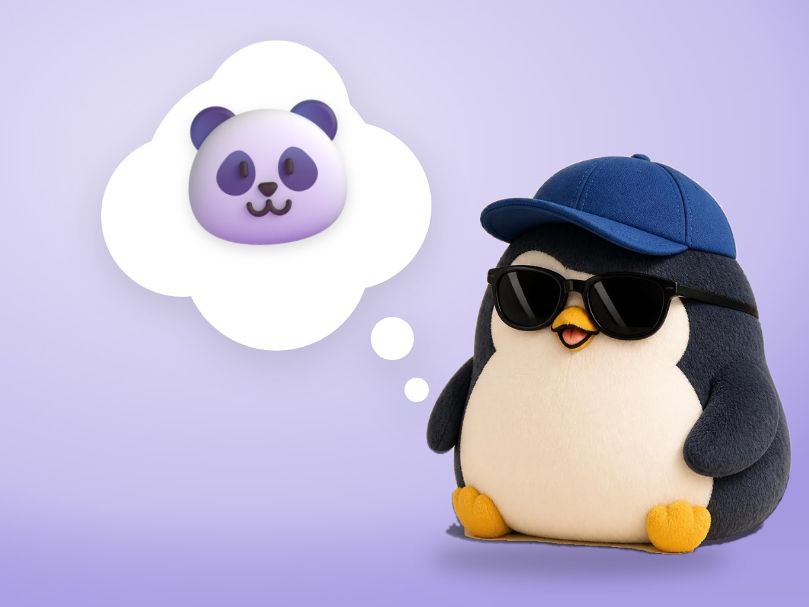

🧪 LAB · 試作 — AIが読書メモから一気に作った記事です。本番の一覧には出していません · 試作の一覧
🐧 EVERYDAY LIFE⚡ 35 SEC
6 small lessons for low-energy days 🌟

Looking Back
I put what I learned in this series into 6 small lessons.
Small Tools
All 6 are small tools for days with no energy.
None of them takes much money or time, and you can use them from today.
Just One
You do not have to do all of them.
Just remember 1, and that is enough.
The Reason
This is because on low-energy days, trying to do many things makes you tired just from that.
When you do 1 small thing, your heart starts to move little by little.
⚡ TRY IT
Light up the penguin stars
Open the 6 cards. Each lesson lights 1 star.
⭐ Stars: 0/6
The head, the heart, the flippers, the feet… Which star comes first?
1Your heart changes with the news you take in and the words you say.
2Fill your own cup first. Kindness flows over from there.
3You cannot change other people. You can change yourself.
4You do not have to be perfect. You are fine as you are.
5Start with 1 small action. When you move, your heart moves too.
6Your body holds up your heart. Sleep, eat, and take a walk.
🌟 THE PENGUIN STARS ARE COMPLETE
Thank you for reading!
See you again on a low-energy day. 🐧💛
🎓 You finished this series before. Welcome back!
For Example
For example, today, just sleeping well and eating something warm is OK.
Thank You
Thank you for reading this series to the end.
📚 I wrote this from my reading notes.